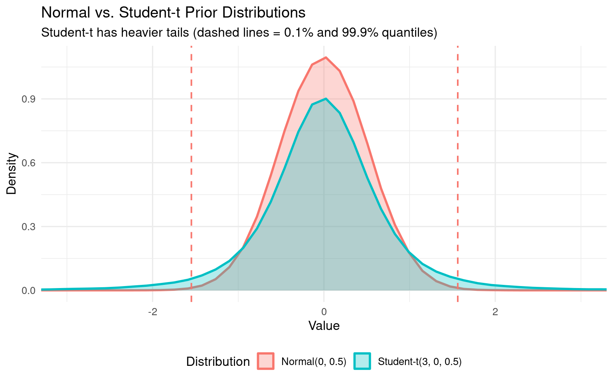

Flat priors: No information - any value equally likely (bad: implies ignorance)
Weakly informative: Gentle regularization - allows data to dominate
Domain-specific: Based on domain knowledge - prevents unreasonable values
1.1.2 The Intercept Adapts to Your Data!
This is important: The default intercept prior depends on mean(y). Let’s see this in action:
Show code
library(brms)library(tidyverse)# Create example datasets with different scalesset.seed(123)# RT data: log-transformed, mean ≈ 6 (≈ 400ms)rt_data_typical <-data.frame(subject =factor(rep(1:20, each =10)),item =factor(rep(1:10, times =20)),condition =factor(rep(c("A", "B"), each =5, times =20)),log_rt =rnorm(200, mean =6, sd =0.5))# RT data: extreme scale, mean ≈ 10 (≈ 22,000ms - unrealistic)rt_data_extreme <-data.frame(subject =factor(rep(1:20, each =10)),item =factor(rep(1:10, times =20)),condition =factor(rep(c("A", "B"), each =5, times =20)),log_rt =rnorm(200, mean =10, sd =2))
Now let’s check what default priors brms suggests:
cat("Typical data prior: ", rt_priors_typical[rt_priors_typical$class =="Intercept", "prior"], "\n")
Typical data prior: student_t(3, 6, 2.5)
Show code
cat("Extreme data prior: ", rt_priors_extreme[rt_priors_extreme$class =="Intercept", "prior"], "\n")
Extreme data prior: student_t(3, 10, 2.5)
Show code
cat("→ The intercept prior CHANGES with data scale!\n")
→ The intercept prior CHANGES with data scale!
Key insight: The intercept prior automatically scales with your data. This is convenient but has a problem: if you don’t specify priors, your prior assumptions implicitly depend on how you code your variables!
1.2 Default brms Priors
When you don’t specify priors, brms assigns defaults:
Intercept: student_t(3, mean(y), 2.5) - DATA-DEPENDENT! Centers at your data mean
Adapts to your data scale automatically
For RT data with mean(log_rt) = 6: allows roughly 150ms-1100ms range
Slopes (b): (flat) - improper uniform prior over (-∞, +∞)
No information: any effect size equally likely
Technically improper (doesn’t integrate to 1)
Sigma (residual SD): student_t(3, 0, 2.5) with lower bound 0
Weakly informative for residual variance
SD (random effects): student_t(3, 0, 2.5) with lower bound 0
Cor (correlations): lkj(1) - uniform over all correlation matrices
1.3 Setting Weakly Informative Priors for Reaction Times
For psycholinguistics, it’s better to specify priors based on domain knowledge:
Show code
# Define priors explicitlyrt_priors <-c(prior(normal(6, 1.5), class = Intercept, lb =4), # log(RT) around 400ms, min ~55msprior(normal(0, 0.5), class = b), # effects typically < 150msprior(exponential(1), class = sigma), # residual SDprior(exponential(1), class = sd), # random effects SDprior(lkj(2), class = cor) # correlations)cat("Our weakly informative priors:\n")
Our weakly informative priors:
Show code
print(rt_priors)
prior class coef group resp dpar nlpar lb ub tag source
normal(6, 1.5) Intercept 4 <NA> user
normal(0, 0.5) b <NA> <NA> user
exponential(1) sigma <NA> <NA> user
exponential(1) sd <NA> <NA> user
lkj(2) cor <NA> <NA> user
1.3.1 Why These Numbers?
1.3.1.1normal(6, 1.5) for Intercept with lb = 4
Mean = 6 on log scale → exp(6) ≈ 403ms (typical RT)
cat("Student-t allows extreme values 2x more likely than normal!\n\n")
Student-t allows extreme values 2x more likely than normal!
Show code
# Graphical comparisonlibrary(ggplot2)comparison_df <-data.frame(value =c(normal_samples, studentt_samples),distribution =rep(c("Normal(0, 0.5)", "Student-t(3, 0, 0.5)"), each = n_samples))ggplot(comparison_df, aes(x = value, fill = distribution, color = distribution)) +geom_density(alpha =0.3, linewidth =1) +geom_vline(xintercept = normal_99, linetype ="dashed", color ="#F8766D", linewidth =0.7) +geom_vline(xintercept = studentt_99, linetype ="dashed", color ="#00BFC4", linewidth =0.7) +coord_cartesian(xlim =c(-3, 3)) +scale_fill_manual(values =c("#F8766D", "#00BFC4")) +scale_color_manual(values =c("#F8766D", "#00BFC4")) +labs(title ="Normal vs. Student-t Prior Distributions",subtitle ="Student-t has heavier tails (dashed lines = 0.1% and 99.9% quantiles)",x ="Value",y ="Density",fill ="Distribution",color ="Distribution" ) +theme_minimal(base_size =12) +theme(legend.position ="bottom")

When to use each:
Student-t: Default choice (conservative, robust to outliers)
Normal: When you have strong domain knowledge about plausible ranges (better for RT data in controlled experiments)
Good sign: Prior predictions should cover the plausible range of your outcome variable, but not too widely.
1.4 Summary
Key takeaways:
Don’t use flat priors - they’re uninformative and often lead to weak regularization
Default intercept priors adapt to data - implicit assumptions depend on your coding!
Specify priors explicitly based on domain knowledge
Use prior predictive checks - verify that priors generate plausible predictions before fitting
Normal() is better than student_t() when you have domain knowledge - more concentrated around plausible values
Next steps: - See 02_prior_predictive_checks_rt.qmd for detailed prior validation - See 03_posterior_predictive_checks_rt.qmd for checking if the fitted model makes sense